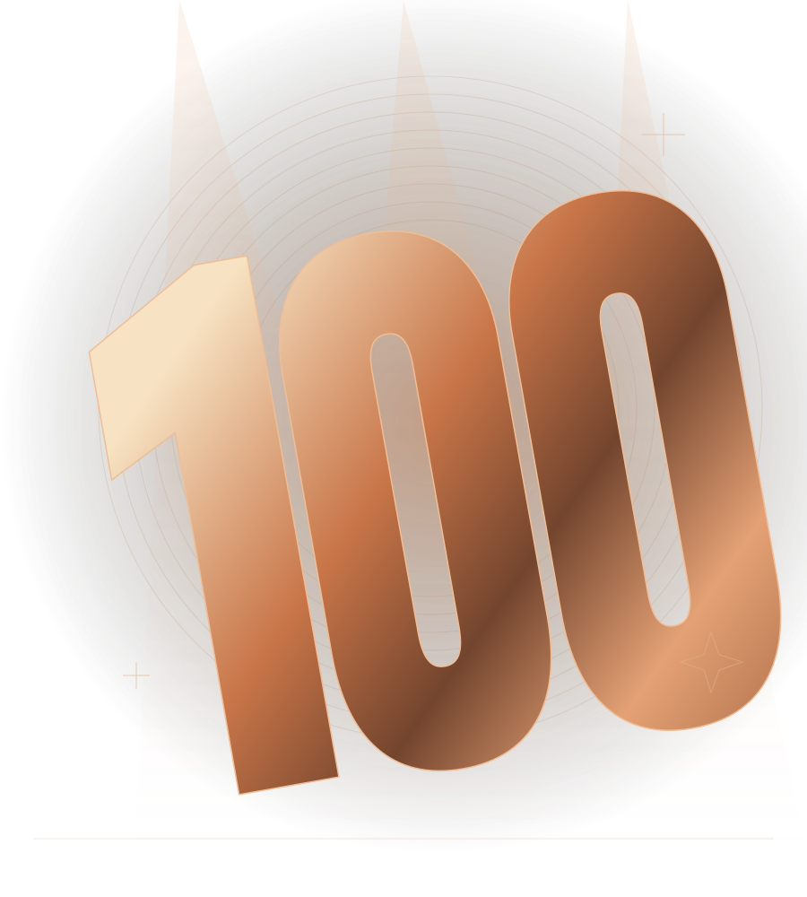

BOSANSKI BEND · KANADA
STO
POSTO.
LIVE BAND
Naša muzika. Vaša noć.
Tri muzičara. Jedna ljubav prema muzici koja nas spaja. Dobro došli u svijet Sto Posto Live Banda.

01 /NASTUPI & ULAZNICE
Vaša sljedeća
noć za pamćenje.
Svi naši naredni nastupi na jednom mjestu. Pronađite svoj grad, odaberite događaj i budite dio naše priče.
STANICA?
NOVI DATUMI USKORO
Najbolje noći
tek dolaze.
Pripremamo naredne susrete. Čim datumi budu potvrđeni, ovdje ćete pronaći gradove, lokacije i informacije o ulaznicama.
Potvrđeni nastupi i službeni linkovi za ulaznice bit će objavljeni ovdje.
02 /NAŠA PRIČA
Tri muzičara.
Jedna energija.
Daleko od kuće.
Blizu onoga što nas spaja.
Sto Posto Live Band je bosanski bend u Kanadi. Muzika je naš način da okupimo ljude — da zapjevamo zajedno, podijelimo trenutak i osjetimo se kao kod kuće.
Naša priča nastavlja se u sastavu od tri muzičara. Vi donosite svoju raju. Mi donosimo sto posto.
03 /DOBRO JE ZNATI
Sve prije
prvog refrena.
Gdje mogu kupiti ulaznice?
Kada prodaja počne, uz potvrđeni nastup pojavit će se dugme „Kupi ulaznice“. Ono vodi na službenu stranicu za kupovinu. Naredni datumi još nisu objavljeni.
Kako dobijam svoju ulaznicu?
Na stranici za kupovinu bit će navedeni način plaćanja, dostava ulaznica i uslovi za odabrani događaj. Sačuvajte potvrdu kupovine i provjerite email koji unesete pri naručivanju.
Kako mogu kontaktirati bend?
Informacije za kontakt nalaze se ispod. Dok pripremamo službene kanale, ovdje možete sastaviti i sačuvati upit za svoj događaj.
04 /HAJDE DA SE ČUJEMO
Vaš događaj.
Sto posto muzike.
Imate datum i mjesto na umu? Pripremite nekoliko detalja o svom događaju.
Službene informacije za kontakt objavljujemo uskoro.